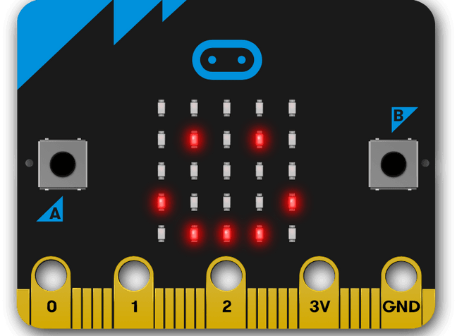

TEÓRICO
Hardware
üî≤ ¬øQu√© es micro:bit?
El micro:bit es una pequeña computadora programable diseñada para hacer que aprender y enseñar sea fácil y divertido. Incluye sensores, pantalla LED, Bluetooth y conectores para componentes externos.

Software
Utilizamos MakeCode para programar los micro:bit y herramientas de inteligencia artificial para generar contenido educativo personalizado. La programación se realizará principalmente en bloques visuales para facilitar la comprensión.
Disciplinas Integradas
Este proyecto combina matemáticas, programación, electrónica, diseño y pedagogía. Fomentamos el aprendizaje STEAM (Ciencia, Tecnología, Ingeniería, Artes y Matemáticas) de manera práctica e interdisciplinaria.
Materiales utilizados (al 29/8/2025)
Microcontroladores
(2 micro:bit)
Computadoras portátiles o de escritorio
(para programación y documentación)
Cables USB
(para programación y energía de las micro:bits)
Conexión a Internet
(para programación en línea, API y repositorio GitHub)
Plataformas digitales
(GitHub -repositorio-, Trello -gestión de tareas-, Google Meet -reuniones-, Uruguay Educa / ANEP -fuentes de contenido-)